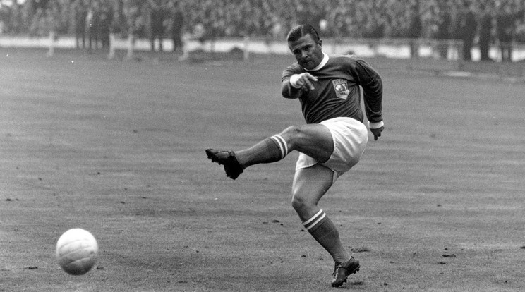

Közel 80 évvel ezelőtt, az 1942/1943-as idényben a Real Madrid 11-1-re verte meg a Barcelonát. Mai napig ez az El Clásicók történetének legnagyobb arányú győzelme. Ez a mérkőzés a Király-kupa elődsorozatának elődöntőjében született, 1943. június 13-án.
1958 és 1966 között a “Száguldó Őrnagy” 242 gólt lőtt, 262 mérkőzésen a klub színeiben. A magyar legendát 1957-ben, emigrációja miatt 18 hónapra eltiltották a játéktól, Olaszországba, majd Spanyolországba költözött, azonban a legtöbb klubnál kora és túlsúlya miatt elutasították.
1958-ban került a Real Madridhoz, letelt az eltiltása is, három Bajnokok-ligáját és öt bajnoki címet szerzett a klubbal. Az 1959/60-as szezonban gólkirály lett a BEK-ben 12 találatával. Az 1960-as döntőben a Frankfurt elleni 7-3-as győzelemből 4 góllal vette ki a részét.

Hányszor mondtuk azt, hogy: “ezt a rekordot lehetetlen megdönteni”, vagy “soha nem fogunk újra ilyet látni”? Van egy egész generáció, akik látták az 50-es években játszani Puskást és Di Stefanót és sosem gondolták volna, hogy lesz még egy játékos, aki olyan hatással lesz majd a Madrid játékára, mint ők. Aztán megérkezett Cristiano Ronaldo. 310 mérkőzés alatt megdöntötte az a gólrekordot, amelyet Raúl 740 mérkőzésen állított be, ezzel ő lett a klub történetének legtöbb találatát elérő játékosa. A 2014-ben a Bajnokok-ligájában lőtt 17 gólja segítette hozzá a csapatot a 10. trófeájához, és az előző szezonban szerzett 16 találta segített megismételni nekik ezt a sikert.
A klub történetének legnagyobb gólját szerezte 2002-ben a Bajnokok-ligája döntőjében, amikor a Real Madrid kilencedszer emelhette magasba a trófeát. A csapat Zidane 45. percben szerzett fantasztikus góljával nyert a Bayer Leverkusen ellen 2-1-re. A következő szezonban bajnoki címet nyert és a FIFA-nál megválasztották az “Év játékosának”. A győztes gólja bizonyíték volt arra, hogy megérte a világ addigi legdrágább igazolásáról szóló szerződést megkötni. Öt szezont töltött a Realnál, 155 mérkőzésen, 37 gólt szerzett. 2016 óta pedig a Real Madrid edzőjeként tevékenykedik.
Manapság, ha a Real Madridot említjük, nincs olyan akinek ne jutna eszébe a világ egyik legjobb hálóőre Iker Casillas. Igaz a spanyol kapus már nem nevelőegyesületénél játszik, és karrierje legjobb időszakán már túl van, de mindig is ikonikus figurája lesz a klubnak. 1997-ben a Real Madrid menedzserei berontottak egy osztályterembe, ahol az akkor 16 éves Casillas is ült, mert a csapat első számú kapusai, Bodo Illigner és Santi Canizares is sérültek voltak és nem tudtak elrepülni a csapattal a Rosenborg elleni összecsapásra, így szükség volt tartalék kapusra. Akkor még a padon ülte végig a csapat meccsét, de klubnál töltött 16 szezon alatt, 18 trófeát nyert közte 5 bajnoki címet és három Bajnokok Ligáját. Habár nem a klasszikus értelemben vett kapusalkat és edzéseken sem a legjobb, de ha beáll a kapuba, ő a Real Madrid és a spanyol labdarúgás legnagyobb kapusa.
Sose zárd be a labdarúgó akadémiádat! Az Atletico Madrid ezt a saját kárán tanulta meg, és a legtehetségesebb játékosait ajándékozta a városi rivális Realnak, köztük minden idők legjobb góllövőjét, Raúlt is. 1992-ben csatlakozott a klubhoz, két évvel később már az első osztályú csapatnál debütált, mindössze 18 évesen. Ahogy az első találkozóján, úgy a 740 mérkőzés egyikén sem idegeskedett. Csak Cristiano Ronaldóról tudta megdönteni a Raúl által felállított, megdönthetetlennek hitt, 323-as gólrekordot.